Verser, retrouver et tenir à jour les épreuves d'examen, pas à pas et
écran par écran.
Espace BDEÉdition de novembre 2026
Bienvenue dans l'espace BDE
Alexandria est la bibliothèque en ligne des épreuves d'examen de
l'ESGIS. En tant que membre du BDE, vous la faites vivre : vous versez
les épreuves que vous collectez, vous corrigez celles qui comportent une
erreur et vous repérez les matières qui n'en ont pas encore. Ce guide
vous accompagne pas à pas, captures d'écran à l'appui.
Votre compteIl est créé par l'administrateur, qui vous remet
votre adresse e-mail de connexion et votre mot de passe.
Vos fichiersUniquement des PDF, de 900 Ko au plus chacun,
jusqu'à quatre par versement.
Vos publicationsUne épreuve versée est aussitôt visible et
téléchargeable par les étudiants sur le site public.
Sommaire
1Se connecteret se déconnecter
2Découvrir votre espacel'accueil, le menu, le téléphone
3Verser une épreuveun ou plusieurs fichiers
4Retrouver une épreuverecherche et filtres
5Corriger ou retirer une épreuvemodifier, remplacer, supprimer
6Combler les épreuves manquantesvotre liste de collecte
7Tenir à jour le numéro WhatsApple contact du site public
8Passation entre deux bureauxquand l'équipe change
9En cas de difficultéles situations courantes et leur solution
1.Se connecter
L'espace BDE est réservé aux membres du bureau. Il s'ouvre avec les
identifiants que l'administrateur vous a remis.
Ouvrez la page de connexion dans votre navigateur :
esgis-alexandria.vercel.app/login. Ajoutez-la
à vos favoris, elle vous servira à chaque fois.
Saisissez votre adresse dans le champ
Adresse email.
Saisissez votre mot de passe. L'icône en forme d'œil, à droite du
champ, affiche ce que vous tapez : pratique pour repérer une faute de
frappe.
Cliquez sur Se connecter. Vous arrivez sur
l'accueil de votre espace.
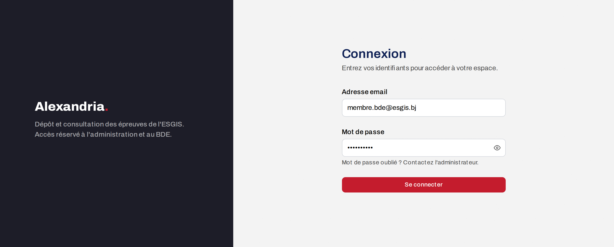
L'écran de connexion, commun à l'administration et au BDE.
Si la connexion échoue
« Email ou mot de passe incorrect » : vérifiez
l'adresse et le mot de passe, majuscules comprises, puis réessayez.
« Ce compte est désactivé » : votre accès a été
fermé, par exemple après une passation. Seul l'administrateur peut
le rouvrir.
Mot de passe oublié : il n'existe pas de
réinitialisation automatique. Contactez l'administrateur, qui vous
en attribuera un nouveau.
Se déconnecter
Cliquez sur Se déconnecter, tout en bas du menu
de gauche. Pensez-y systématiquement sur un ordinateur partagé, à la
bibliothèque ou en salle informatique.
2.Découvrir votre espace
Après la connexion, vous arrivez sur l'accueil. Le menu de gauche reste
affiché sur toutes les pages : il vous mène partout en un clic.
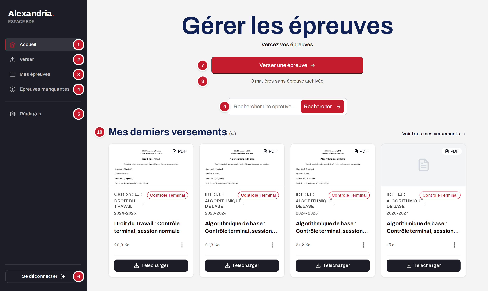
L'accueil de l'espace BDE. Les numéros renvoient à la légende
ci-dessous.
1Accueil : revient à cette page.
6Se déconnecter : ferme votre session.
2Verser : dépose une ou plusieurs épreuves (section
3).
7Verser une épreuve : le même formulaire, en
raccourci.
3Mes épreuves : tout ce que vous avez versé
(section 5).
8Matières sans épreuve archivée : le nombre de
lacunes du fonds. Ce lien disparaît quand tout est couvert.
4Épreuves manquantes : les matières à collecter en
priorité (section 6).
9Recherche : retrouve n'importe quelle épreuve du
fonds (section 4).
5Réglages : le numéro WhatsApp du site public
(section 7).
10Mes derniers versements : vos dépôts les plus
récents. Voir tous mes versements ouvre la
liste complète.
Plus bas sur la même page,
Dernières épreuves de l'équipe présente ce que les
autres membres du BDE ont déposé récemment.
Sur téléphone
Alexandria fonctionne aussi sur smartphone. Le menu y est replié pour
laisser la place au contenu : touchez le bouton rouge à trois traits, en
haut à droite, pour l'ouvrir, puis la croix pour le refermer.
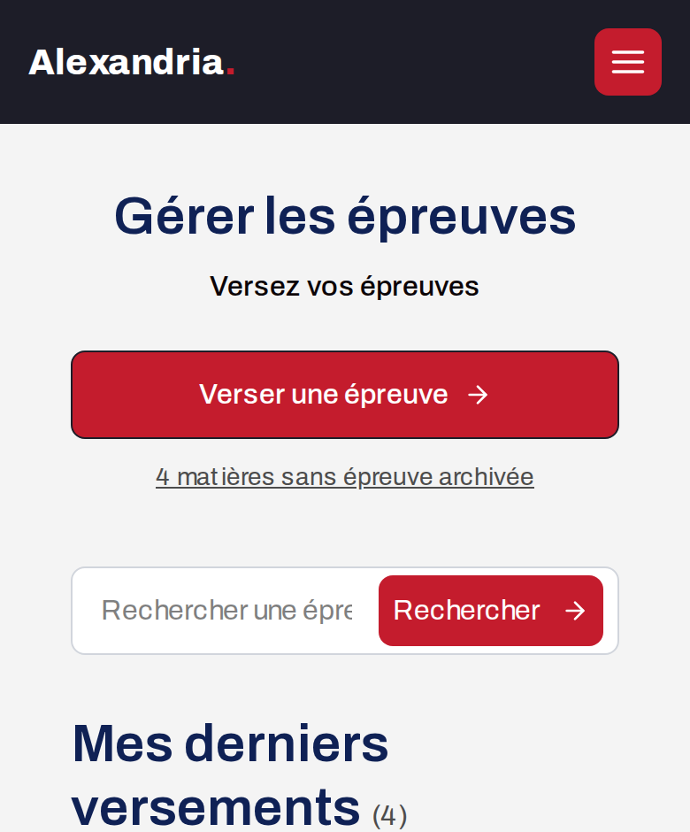
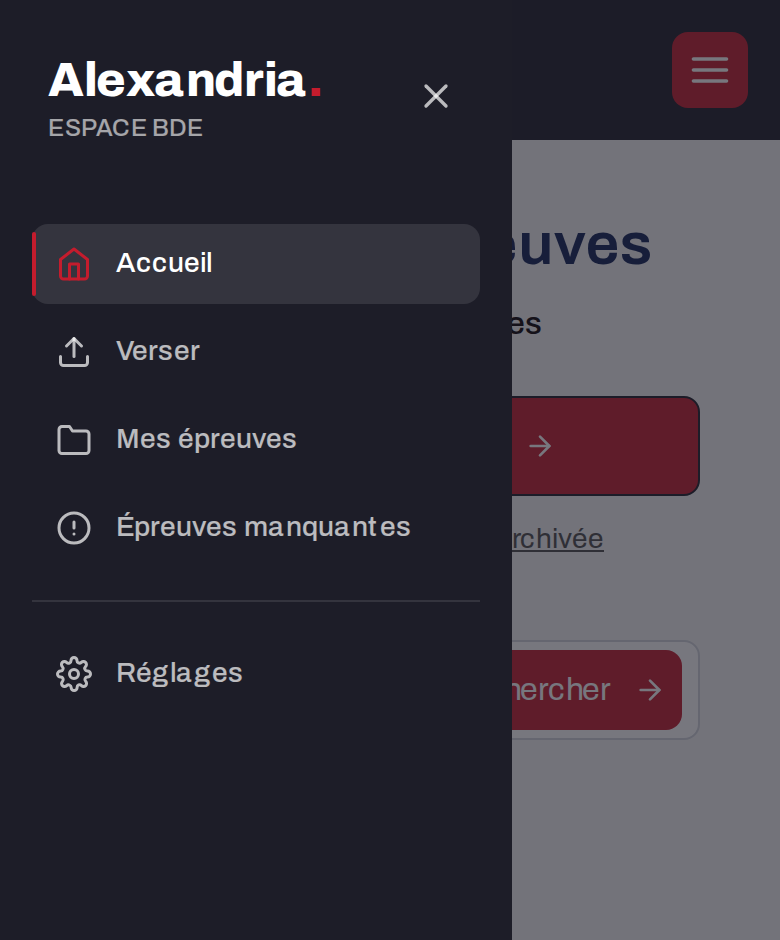
L'accueil sur téléphone, menu fermé puis ouvert.
3.Verser une épreuve
Un même versement accepte jusqu'à quatre fichiers, à condition qu'ils
portent sur la même matière, le même type et la même session : c'est le
cas typique de plusieurs années d'un même examen. Pour des matières
différentes, faites un versement par matière.
Avant de commencer, vérifiez votre fichier
Il est au format PDF. Une photo prise au téléphone
doit d'abord être convertie en PDF, par exemple avec une application
de numérisation.
Il pèse 900 Ko au plus. Au-delà, compressez-le avec
un outil de compression PDF en ligne.
Il est lisible et complet : toutes les pages, dans
le bon sens.
Étape A : ajouter les fichiers
Cliquez sur Verser dans le menu.
Faites glisser vos fichiers dans le cadre en pointillés, ou cliquez
sur Importez vos fichiers pour les choisir
sur votre appareil.
Choisissez l'année académique de chaque fichier. Si tous sont de la
même année, choisissez-la une seule fois en haut, puis cliquez sur
Appliquer à tous. Pour une ancienne épreuve
dont l'année est inconnue, cochez
Année inconnue.
Un fichier ajouté par erreur se retire avec la croix, à droite de sa
carte.
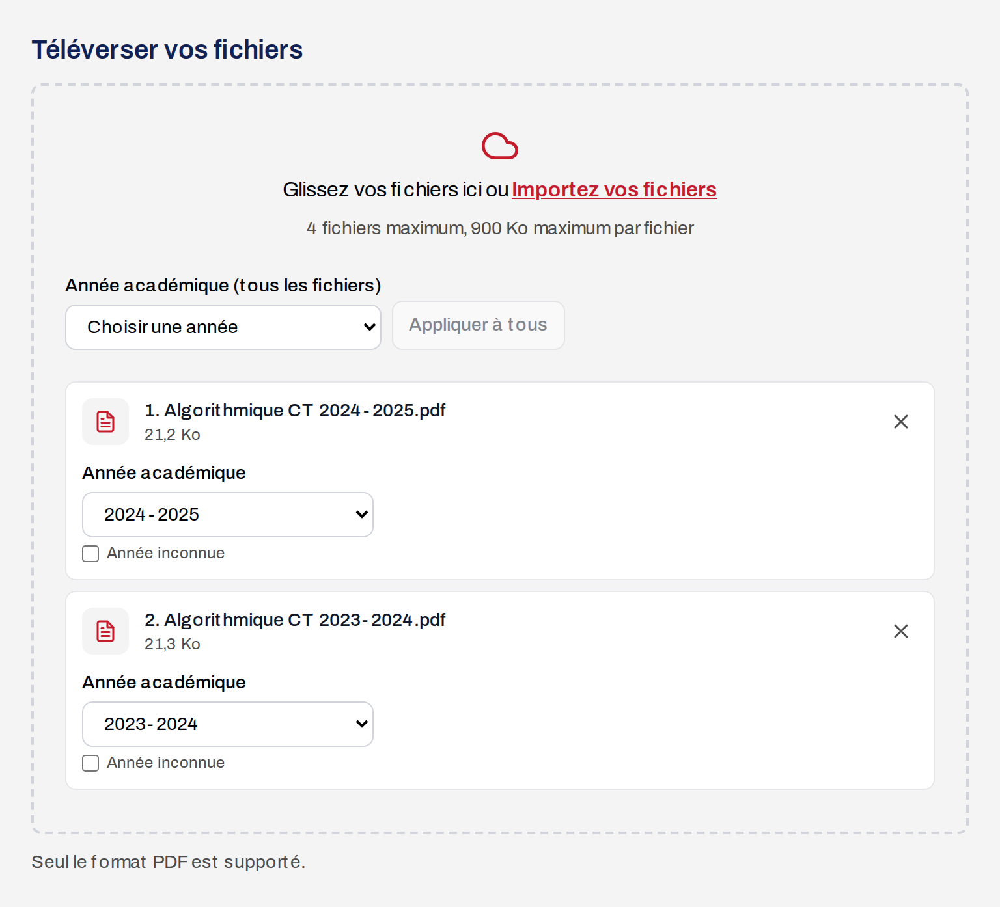
Deux fichiers ajoutés, chacun avec son année académique.
Étape B : décrire l'épreuve
Dans Matière, tapez les premières lettres de
son nom, puis choisissez-la dans la liste qui s'affiche. La filière
et le niveau se remplissent tout seuls.
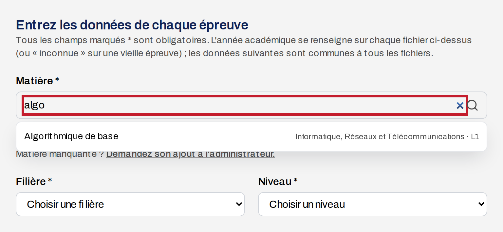
La recherche de la matière : quelques lettres suffisent.
Choisissez le type d'épreuve : Terminal pour
un contrôle terminal, Continu pour un
contrôle continu.
Pour un contrôle terminal, choisissez la session :
Normale ou
Rattrapage. Un contrôle continu n'a pas de
session : la question disparaît d'elle-même.
Cliquez sur Verser les épreuves (ou
Verser l'épreuve s'il n'y a qu'un fichier).
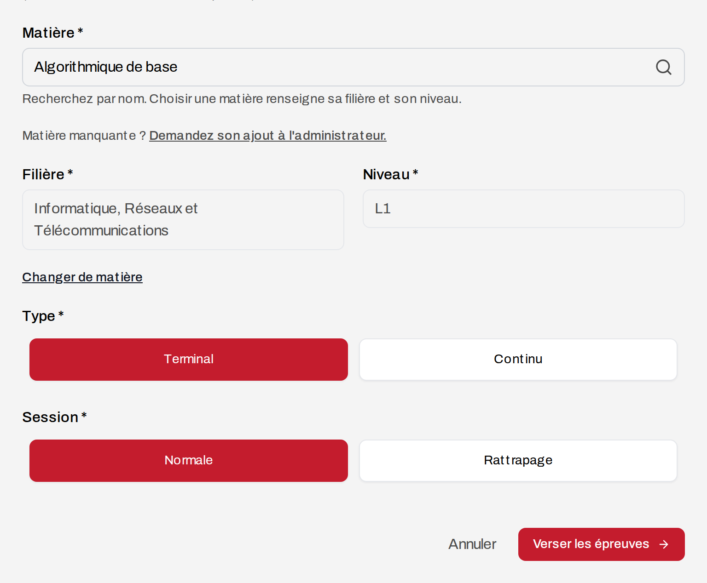
Le formulaire rempli, prêt à être envoyé.
Bon à savoir
Vous n'avez aucun titre à écrire : Alexandria le compose à partir de
la matière, du type et de la session, par exemple « Algorithmique de
base : Contrôle terminal, session normale ».
La matière n'apparaît pas dans la liste ? Cliquez sur
Demandez son ajout à l'administrateur, sous
le champ : seul l'administrateur peut créer une matière.
Le bouton Annuler vous demande confirmation
si vous avez déjà saisi quelque chose : les informations et les
fichiers choisis seraient perdus.
Étape C : vérifier le résultat
Un écran récapitule le versement, fichier par fichier. Chaque fichier
publié apparaît en vert, avec un lien
Voir l'épreuve pour contrôler le rendu. Vous
pouvez ensuite enchaîner avec
Verser d'autres épreuves.
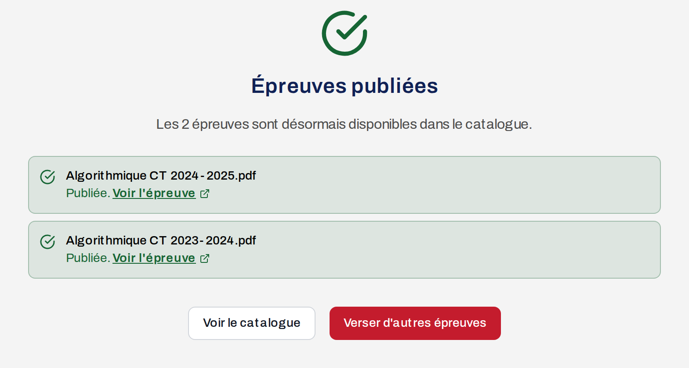
Le versement est terminé : les deux épreuves sont en ligne.
Si tout ne s'est pas bien passé
Fichier déjà déposé : le même fichier existe déjà
dans Alexandria. Il est refusé et le message indique l'épreuve
existante. Il n'y a rien d'autre à faire.
Avertissement en orange : une autre épreuve a déjà
la même matière, la même année, la même session et le même type. La
vôtre est tout de même publiée : ouvrez les deux pour vérifier qu'il
ne s'agit pas d'un doublon, et supprimez-en une si besoin (section
5).
Publication partielle : certains fichiers sont en
ligne, d'autres non. Le motif s'affiche sous chaque fichier en rouge
: corrigez-le, puis versez de nouveau ces fichiers seulement.
4.Retrouver une épreuve
La barre de recherche de l'accueil parcourt toutes les épreuves du
fonds, pas seulement les vôtres.
Sur l'accueil, tapez un mot du nom de la matière, par exemple «
Algorithmique », puis cliquez sur Rechercher.
Le catalogue s'ouvre sur les résultats. Affinez-les avec les filtres
de gauche : niveau, filière, option, matière, année académique, type
d'évaluation et session.
Masquer les filtres les replie.
Cliquez sur une carte pour ouvrir la fiche de l'épreuve, ou sur
Télécharger pour récupérer directement le PDF.
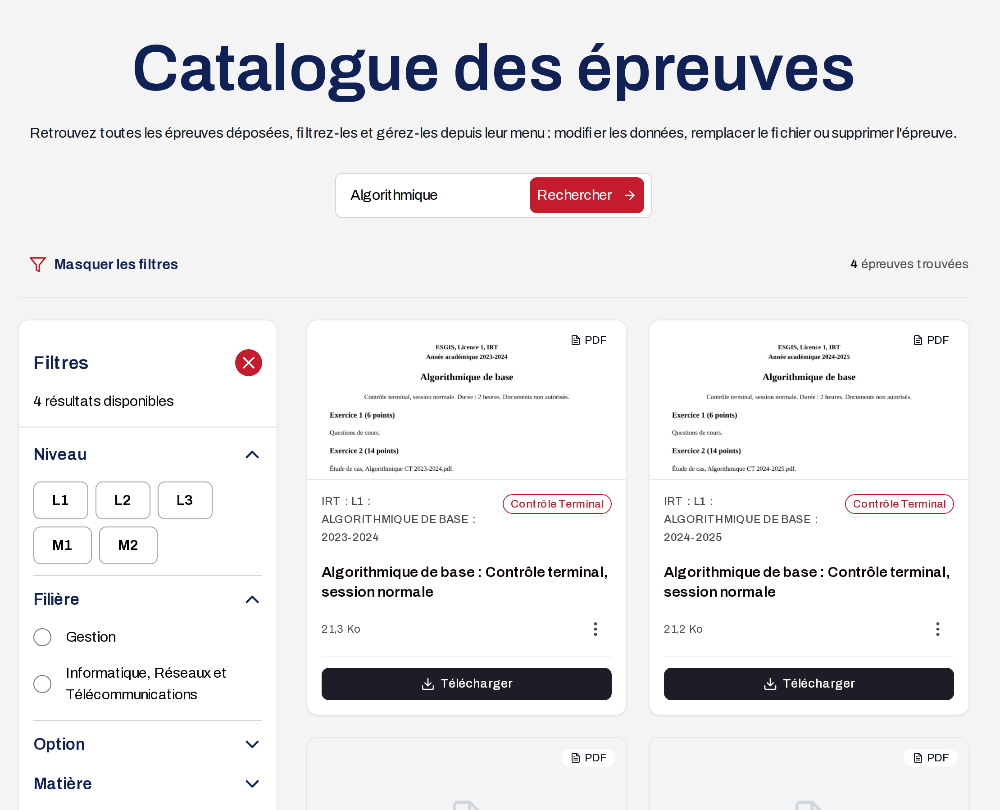
Les résultats d'une recherche, avec les filtres à gauche.
Bon à savoir
Depuis le catalogue, les épreuves versées par les autres membres se
gèrent exactement comme les vôtres, avec le menu à trois points de
leur carte (section 5). Vous pouvez ainsi corriger une erreur repérée
dans le travail de toute l'équipe.
5.Corriger ou retirer une épreuve
Une matière mal choisie, un scan illisible, un dépôt en double : tout se
corrige après coup, sans repartir de zéro.
Vos versements
La page Mes épreuves rassemble toutes les
épreuves que vous avez versées, avec la même recherche et les mêmes
filtres que le catalogue. Le bouton à trois points de chaque carte ouvre
un menu de trois actions : Modifier les données,
Remplacer le fichier et
Supprimer l'épreuve.
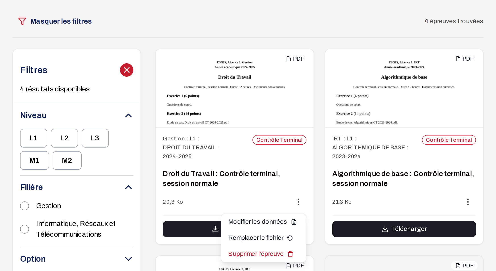
Le menu d'une épreuve, ouvert depuis sa carte.
La fiche d'une épreuve
Un clic sur une carte ouvre la fiche de l'épreuve : un aperçu du PDF,
ses détails, et trois boutons pour la diffuser :
Télécharger l'épreuve enregistre le PDF sur
votre appareil, Partager sur WhatsApp prépare un
message contenant le lien de l'épreuve, et
Copier le lien vous permet de le coller dans
toute autre messagerie. Le bloc Gestion reprend
les trois actions du menu.
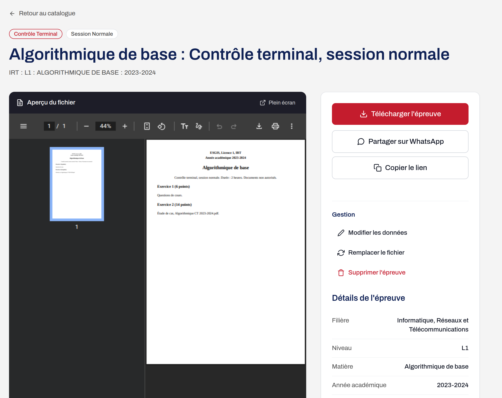
La fiche d'une épreuve, avec son aperçu et le bloc Gestion.
Modifier les données
Pour corriger la matière, l'année, le type ou la session. Le fichier
PDF, lui, n'est pas touché.
Choisissez Modifier les données.
Corrigez ce qui doit l'être. L'année se règle dans la carte du
fichier, en haut de la page. Pour changer de matière, cliquez
d'abord sur Changer de matière.
Cliquez sur Enregistrer les modifications,
en bas de la page. Le titre de l'épreuve se met à jour tout seul.
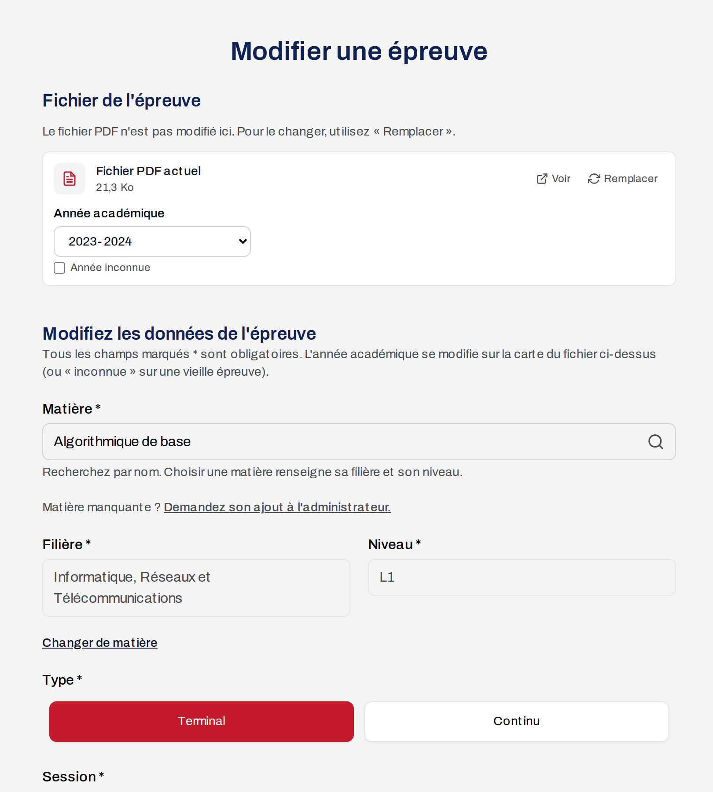
La page de modification, préremplie avec les données actuelles.
Remplacer le fichier
Pour mettre en ligne un scan de meilleure qualité ou une version
complète. Les données de l'épreuve sont conservées.
Choisissez Remplacer le fichier.
Déposez le nouveau PDF : un seul fichier, 900 Ko au plus.
Cliquez sur Remplacer le fichier, puis
confirmez avec Remplacer. L'ancien fichier
est remplacé définitivement.
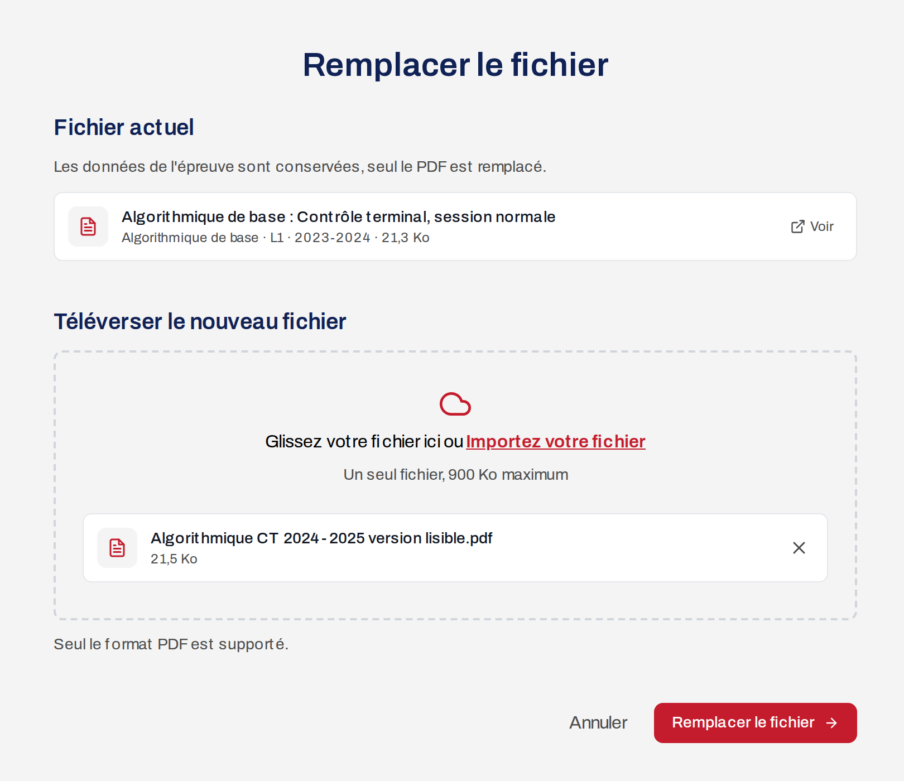
Le fichier actuel en haut, le nouveau en dessous.
Supprimer une épreuve
Choisissez Supprimer l'épreuve.
Une fenêtre rappelle le titre de l'épreuve et demande confirmation.
Cliquez sur Supprimer pour confirmer, ou sur
Annuler pour renoncer.
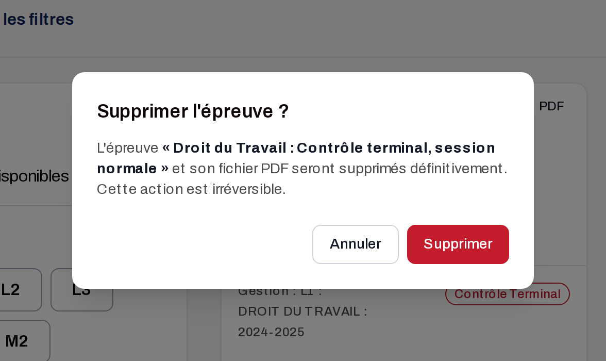
La confirmation demandée avant toute suppression.
Attention
La suppression est définitive : l'épreuve et son fichier disparaissent
du site, sans corbeille ni retour possible. En cas de doute, préférez
Modifier les données ou
Remplacer le fichier.
6.Combler les épreuves manquantes
La page Épreuves manquantes montre, filière par
filière et niveau par niveau, combien d'épreuves sont archivées pour
chaque matière. C'est votre liste de collecte.
Les matières en bleu, marquées
Aucune épreuve, n'ont encore rien : ce sont
les priorités.
À droite du nom de chaque filière, un compteur indique le nombre de
matières sans épreuve, ou
Tout est couvert quand il n'en reste aucune.
Pour une matière déjà couverte, le chiffre indique son nombre
d'épreuves : cliquez dessus pour les voir dans le catalogue.
Cliquez sur le nom d'une filière pour l'afficher seule.
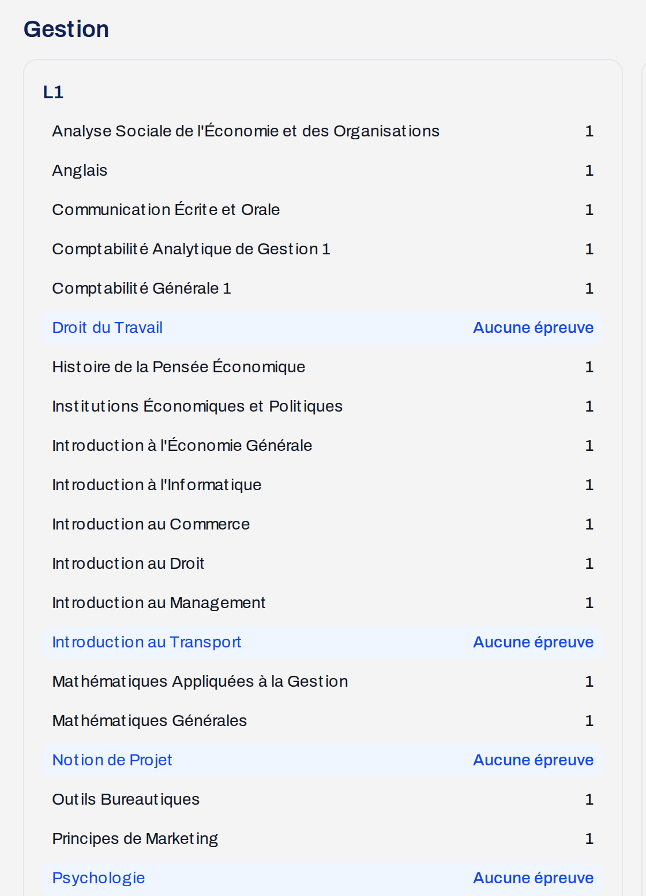
Gestion, niveau L1 : quatre matières attendent encore une épreuve.
Verser directement depuis une lacune
Cliquez sur une matière marquée
Aucune épreuve.
Le formulaire de versement s'ouvre avec la matière, la filière et le
niveau déjà remplis.
Ajoutez le fichier et son année, choisissez le type et la session,
puis versez comme d'habitude (section 3). La matière quitte ensuite la
liste des lacunes.
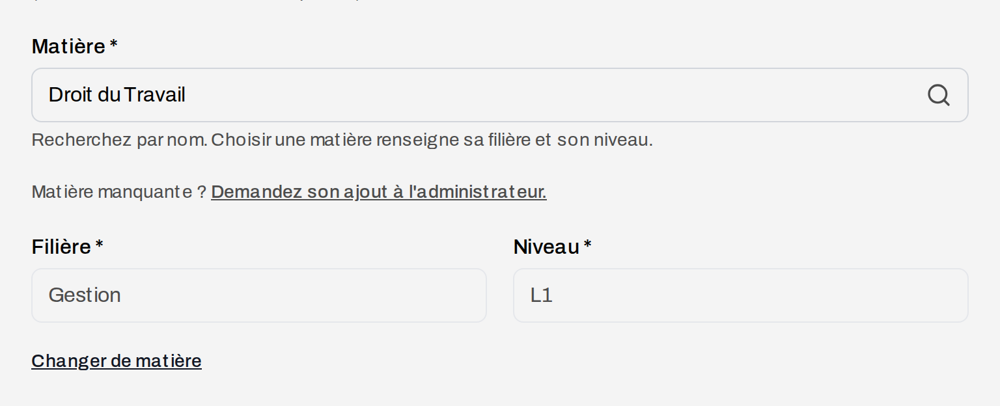
Ouvert depuis une lacune, le formulaire est déjà prérempli.
7.Tenir à jour le numéro WhatsApp
Sur le site public, le bouton « Nous contacter » du pied de page et la
FAQ de l'accueil ouvrent une conversation WhatsApp avec le BDE. C'est
par là que les étudiants vous envoient une épreuve ou vous signalent une
erreur : ce numéro doit toujours être le bon.
Cliquez sur Réglages dans le menu.
Saisissez le numéro au format international, indicatif compris :
+229 pour le Bénin, par exemple
+229 01 97 00 00 00.
Cliquez sur Enregistrer le numéro. Le
message « Numéro enregistré » confirme qu'il est déjà en ligne.
Cliquez sur Tester le lien pour vérifier que
WhatsApp s'ouvre bien sur la bonne conversation.
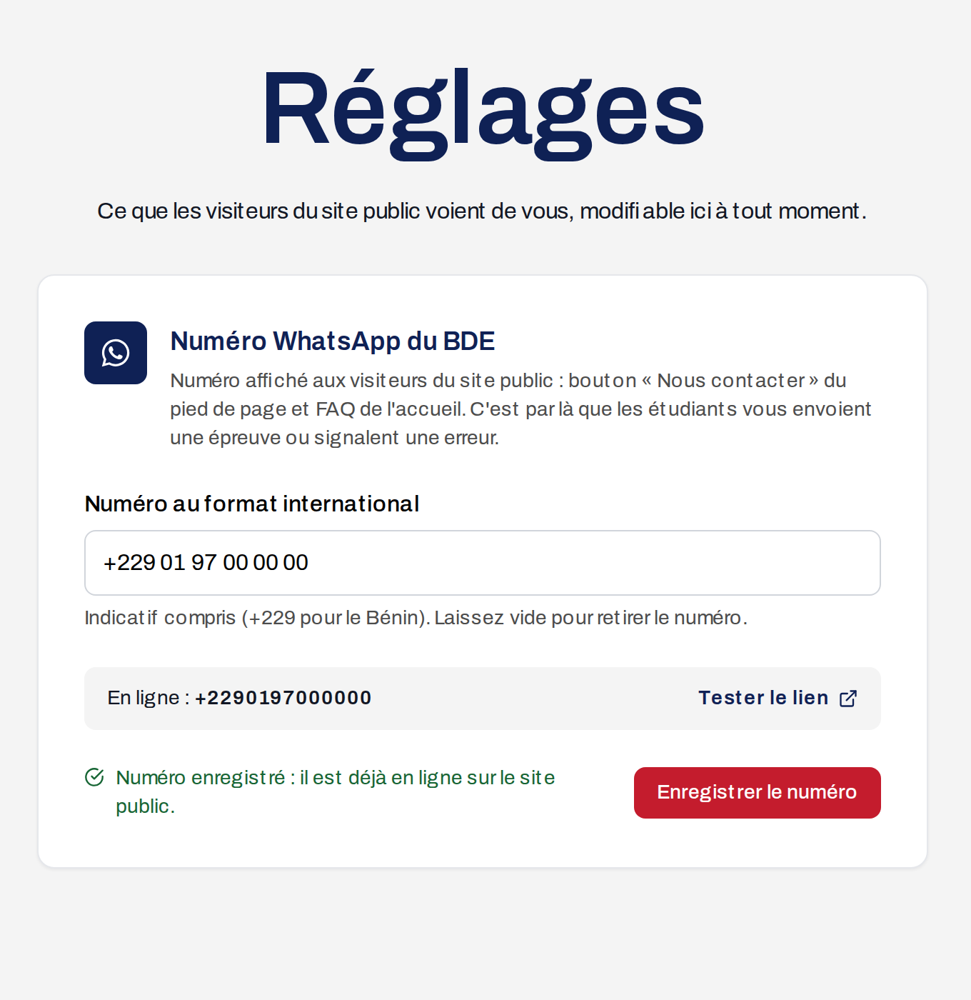
Le numéro enregistré, avec le lien de test.
Attention
Pour retirer le numéro, videz le champ, cliquez sur
Enregistrer le numéro, puis confirmez avec
Retirer le numéro. Sans numéro, le bouton du
site ouvre WhatsApp sans destinataire : les étudiants ne peuvent plus
vous joindre. Vérifiez ce réglage à chaque passation.
8.Passation entre deux bureaux
Quand l'équipe du BDE change, les comptes changent aussi. Leur création
et leur désactivation reviennent à l'administrateur, mais chaque membre
doit connaître le déroulé.
Le bureau sortant prévient l'administrateur du changement, par un
contact direct, en dehors d'Alexandria, et lui indique les noms et
adresses e-mail des nouveaux membres.
L'administrateur crée les comptes des nouveaux membres et désactive
ceux des membres sortants. Un compte désactivé ne peut plus se
connecter, mais les épreuves qu'il a versées restent en ligne.
Chaque nouveau membre se connecte avec les identifiants reçus (section
1).
Le nouveau bureau vérifie le numéro WhatsApp dans
Réglages et le remplace si le contact change
(section 7).
Il consulte Épreuves manquantes pour reprendre
la collecte là où elle s'est arrêtée (section 6).
Bon à savoir
Mes épreuves ne montre que vos propres
versements : la page d'un nouveau membre est donc vide au départ. Les
épreuves versées par vos prédécesseurs restent accessibles, et
modifiables, depuis la recherche (section 4).
9.En cas de difficulté
Les situations les plus courantes et la marche à suivre pour chacune.
Situation
Que faire
J'ai oublié mon mot de passe.
Contactez l'administrateur : il n'existe pas de réinitialisation
automatique.
La connexion affiche « Ce compte est désactivé ».
Demandez à l'administrateur de réactiver votre compte.
Mon fichier est refusé : ce n'est pas un PDF valide.
Enregistrez ou numérisez le document au format PDF, puis versez-le
de nouveau.
Mon fichier dépasse 900 Ko.
Compressez-le avec un outil de compression PDF en ligne, puis
versez-le de nouveau.
La matière n'existe pas dans la liste.
Cliquez sur « Demandez son ajout à l'administrateur », sous le
champ Matière.
Le message « Impossible de joindre le serveur » s'affiche.
Vérifiez votre connexion Internet, consultez
Mes épreuves pour voir ce qui a déjà été
publié, puis relancez le reste.
Le fichier a déjà été déposé.
Rien à faire : l'épreuve existe déjà. Le message indique laquelle.
Une épreuve publiée comporte une erreur.
Corrigez ses données ou remplacez son fichier (section 5).
Une même épreuve apparaît en double.
Ouvrez les deux fiches pour comparer, puis supprimez la moins
bonne (section 5).
Un étudiant n'arrive pas à joindre le BDE.
Vérifiez le numéro dans Réglages et
cliquez sur Tester le lien (section 7).
Pour toute autre question, contactez l'administrateur d'Alexandria.